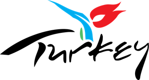

HISTORY OF ISTANBUL
Istanbul, Turkish İstanbul, formerly Constantinople, ancient Byzantium, largest city and principal seaport of Turkey. It was the capital of both the Byzantine Empire and the Ottoman Empire.
The old walled city of Istanbul stands on a triangular peninsula between Europe and Asia. Sometimes as a bridge, sometimes as a barrier, Istanbul for more than 2,500 years has stood between conflicting surges of religion, culture, and imperial power. For most of those years it was one of the most coveted cities in the world.
The name Byzantium may derive from that of Byzas, leader of the Greeks from the city of Megara who, according to legend, captured the peninsula from pastoral Thracian tribes and built the town about 657 BCE. In 196 CE, having razed the town for opposing him in a civil war, the Roman emperor Septimius Severus rebuilt it, naming it Augusta Antonina in honour of his son. In 330 CE, when Constantine the Great dedicated the city as his capital, he called it New Rome. The coinage, nevertheless, continued to be stamped Byzantium until he ordered the substitution of Constantinopolis. At the end of the 1st millennium, Greek speakers were reported to refer to trips there as eis tēn polin, “into the City,” rather than “to Constantinople.” By the 13th century this Greek phrase had become an appellation for the city: Istinpolin. Through a series of speech permutations over a span of centuries, this name became Istanbul. Until the Turkish Post Office officially changed the name in 1930, however, the city continued to bear the millenary name of Constantinople. Pop. (2007) 10,757,327; (2017 est.) urban agglom., 14,744,519. (Britannica)
There are currently bills of 1, 5, 10, 20, 50, 100 and 200 Turkish Lira. Coins are 1 Lira and 50, 25, 10, 5 and 1 kuru (100 kuru = 1 Lira) (https://www.introducingistanbul.com/currency).
One Euro is currently equal to 8.90142 Turkish Lira while one dollar is equal to 7.92 Turkish Lira. However, these numerals change daily therefore it is highly recommended to check the daily currency rate.
Useful Words & Phrases Open -- Açik Closed -- Kapali How much? -- Kaç para? (literally, "how much money?") or Ne kadar? One ticket, please -- Bir tane bilet, lütfen Gate (travel) -- Kapi Where? Where is it? -- Nerede? Where's the toilet? -- Tuvalet nerede? Yes -- Evet No -- Hayir (higher) Please -- Lütfen